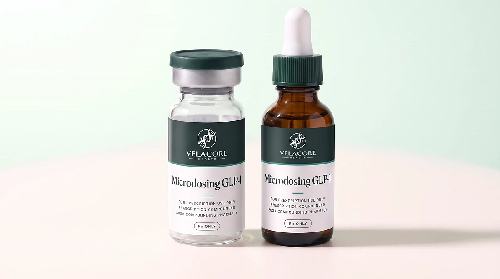

What is microdosing GLP-1?
Microdosing GLP-1 means taking a GLP-1 medication at a lower dose than standard programs use. The word is informal and is not a term the FDA defines. In our program it describes a low dose of a GLP-1 medication combined with other ingredients, prescribed only when a licensed clinician decides it is appropriate.

What the term means
GLP-1 medications are receptor agonists, which means they act on the receptor for a hormone called glucagon-like peptide-1. Our standard programs use five dose levels and move through them with clinician review.
Microdosing is the name some programs give to a dose that sits below those standard levels. The word describes the size of the dose relative to a standard program. It does not describe a specific amount.
People search for it in two ways: what a microdose of a GLP-1 is, and how it compares with a regular dose. This article takes both in order.
Microdosing is not an FDA-defined term
Microdosing is not a term the FDA defines. It is a word used by clinics and telehealth programs. The FDA's own page on compounded GLP-1 medications, listed in the sources below, does not use it.
Because there is no official definition, the word can mean different things from one program to the next. The useful questions are plain ones: which medication, in what form, prepared by which kind of pharmacy, and who sets the dose.
Our microdosing program uses compounded medication. Compounded medications are not FDA approved and are not reviewed by the FDA for safety or efficacy.
The FDA also encourages patients using compounded semaglutide or tirzepatide to talk with their health care provider or compounder about how to measure and administer the intended dose.
How our program describes it
The Microdosing GLP-1 program uses a GLP-1 medication at a lower dose than the standard weight programs. It is combined in one preparation with ingredients such as NAD+, B12, L-carnitine, inositol, methionine, choline, magnesium or L-theanine.
There are seven formulations, in oral or injectable form. Your clinician picks the one that fits your intake. Each preparation is compounded by a licensed 503A pharmacy to your clinician's prescription, and ingredient availability can vary by state and pharmacy.
How a microdose program differs from a standard dose program
On our site, the differences are these.
- The GLP-1 dose is lower.
- The GLP-1 is combined with other ingredients in one preparation.
- There are oral options as well as injections.
- The clinician reviews on a 12-week cycle rather than monthly.
- Eligibility is different. The microdosing program is for adults 18 to 74 with a body mass index over 20. The standard GLP-1 programs are for adults 18 to 74 with a body mass index of 27 or above, or 25 or above with a related health condition.
The clinician decides which program fits your intake.
Who sets the dose
The licensed clinician makes the prescribing decision, and that includes the dose. We do not publish dose figures for this program, and this article is not a dosing guide.
The process runs in the same order as every Velacore program. You complete an online intake about your health, history and goals. A licensed clinician in your state reviews it, usually without a live appointment. If appropriate, the clinician chooses the formulation and form and prescribes a 4-week supply.
Every 12 weeks you update a short intake and the clinician reviews it. You can request a video visit at any time at no extra cost. Refills ship every 4 weeks. The price and what it includes are set out on the program page.
What we do not say about microdosing
You will find many claims online about what a low dose of a GLP-1 medication does. We do not make them. This article describes what the term means and what is in our program. It makes no statement about what the program does for any condition.
Whether a low dose, a standard dose or no GLP-1 medication at all is appropriate for you is a question for a licensed clinician. If the clinician does not prescribe, nothing is ordered and your program payment is refunded in full.
Common questions
Is microdosing GLP-1 FDA approved?
No. The program uses compounded medication, and compounded medications are not FDA approved. Microdosing is also not a term the FDA defines.
Is a microdose taken by mouth or by injection?
Either. There are seven formulations in oral or injectable form, and your clinician picks the one that fits your intake.
How much lower is the dose?
The clinician sets the dose on your prescription. We do not publish dose figures.
Do I need a prescription?
Yes. The program is prescription only, and the licensed clinician decides whether it is appropriate for you.
Sources
This article is general education, not medical advice. Compounded medications are not FDA approved and are not reviewed by the FDA for safety or efficacy. Whether any treatment is appropriate for you is decided solely by a licensed clinician.